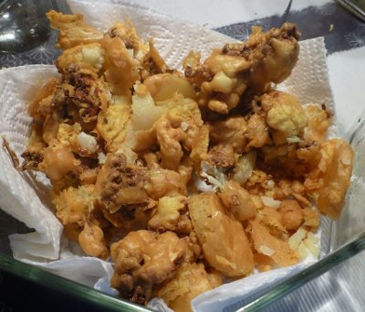

| Zutaten für 4 Personen: | |
| 8 EL | Kichererbsenmehl |
| 1/2 KL | Salz |
| 1 KL | Chilipulver |
| 1 KL | Backpulver |
| 1.5 KL | Kreuzkümmelsamen |
| einige | Kerne eines Granatapfels |
| frische Korianderblätter (fein gehackt) | |
| 5 dl | Erdnussöl |
| Gemüse nach Belieben: z.B. | |
| Kleine Blumenkohlröschen | |
| Zwiebelringe | |
| hauchdünne Kartoffelscheiben | |
| 1/2 cm Auberginenscheiben | |
| kleine Champignons | |
| Peperoni in feinen Streifen | |
Kichererbsenmehl in eine grosse Schüssel sieben.
Salz, Chilipulver, Backpulver, Kreuzkümmelsamen und Granatapfelkerne ins Mehl mischen.
0.75 dl Wasser dazugiessen und zu einem zäh-flüssigen Teig verrühren (wie Ausbackteig).
Die frischen Korianderblätter darunter mischen.
Erdnussöl in einer Bratpfanne erhitzen, bei mittlerer Temperatur warm halten.
Dann das Gemüse einzeln durch den Teig ziehen, portionenweise im Öl frittieren und auf Küchenpapier abtropfen lassen.
Mit verschiedenen Chutneys, warm servieren!
Patricia Krummenacher, Indischer Kochkurs, 2006
Hat im Kochkurs sensationell geschmeckt!
Im Juli 2010 für das Foto erneut zubereitet. Mit der ungewohnten Fritteuse mit Öl von dubiosem Alter war das ein spannendes Experiment. Das Frittiergut schmeckte dennoch ganz gut. RE
@LINKBACK_TAG@ @WAKELOCK@